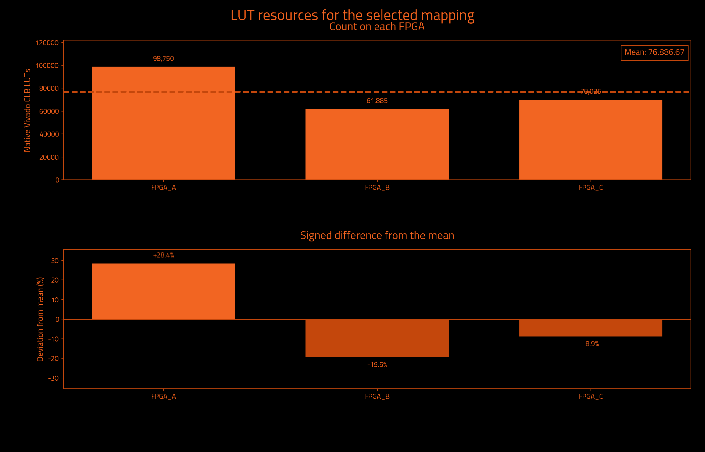
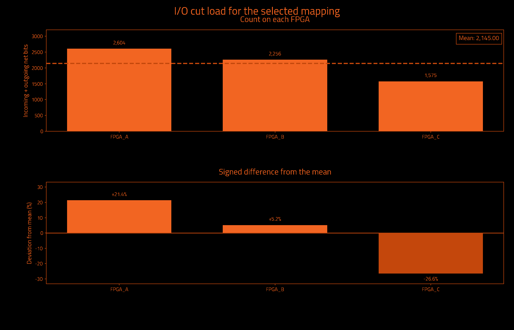
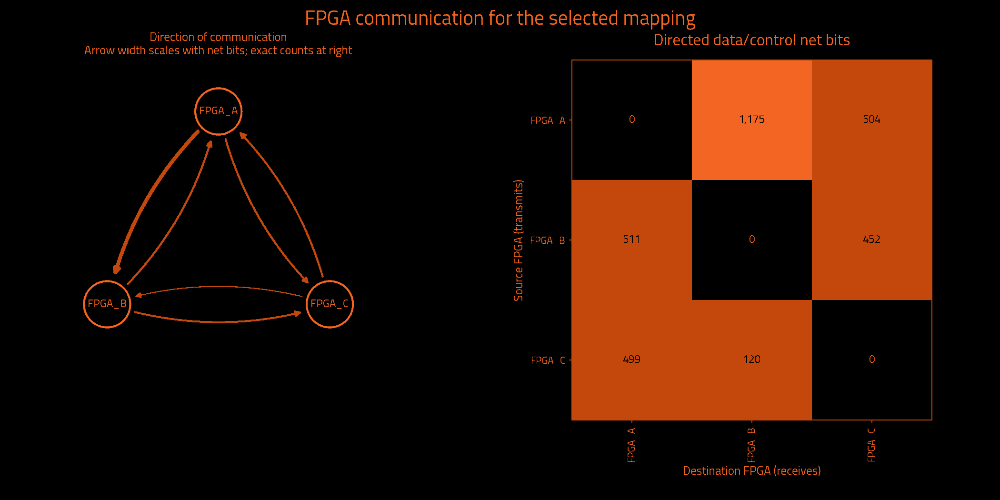

Historical measurements preserved by exact ownership equivalence · mapping.txt
Historical metrics preserved by exact ownership equivalence; not a fresh Vivado measurement.
| Selected partition | Result | Search | Result |
|---|---|---|---|
| FPGAs | 3 | Iterations requested | Unavailable |
| Native Vivado CLB LUTs | 230,660 | Iterations attempted | 3 |
| Unique data/control cut net bits | 3,174 | Selected iteration (zero-based) | 2 |
| Directed data/control net-bit pairs | 3,261 | Target board | j4.phd |
| Measurement | Result | Measurement | Result |
|---|---|---|---|
| Wall time | Unavailable | Observed CPU time | Unavailable |
| Average CPU cores | Unavailable | Average CPU use (one core = 100%) | Unavailable |
| Peak sampled process-tree memory | Unavailable | Frontend peak memory | Unavailable |
| Child processes observed | Unavailable | Sampling interval | Unavailable |
Measured through: Unavailable. CPU covers the frontend and observed descendants; sampling can miss short-lived work. Process-tree memory sums may count shared pages more than once.
No runtime measurement supplied.
Observed CPU time is a lower bound when short-lived processes escape sampling. Windows-host sampling excludes work inside WSL. Process-tree memory sums may count shared pages more than once.
| Logical FPGA | Native Vivado CLB LUTs | Device LUT utilization | Hard LUT cap | Outgoing net bits | Incoming net bits | Total I/O net bits |
|---|---|---|---|---|---|---|
| FPGA_A | 98,750 | 1.167% | 6,345,216 | 1,594 | 1,010 | 2,604 |
| FPGA_B | 61,885 | 0.731% | 6,345,216 | 961 | 1,295 | 2,256 |
| FPGA_C | 70,025 | 0.828% | 6,345,216 | 619 | 956 | 1,575 |
| Logical FPGA | Target device | Registers | Block RAM tiles | DSP blocks | UltraRAM blocks |
|---|---|---|---|---|---|
| FPGA_A | xcvp1902 | 65,772 | 332.5 | 8 | 12 |
| FPGA_B | xcvp1902 | 26,792 | 0.0 | 0 | 0 |
| FPGA_C | xcvp1902 | 54,237 | 10.5 | 16 | 0 |



| Measurement | Before local cleanup | Selected result |
|---|---|---|
| Worst minimum physical link hops without a register | 5 | 4 |
| Worst FPGA boundary crossings without a register | 5 | 4 |
| Extra crossings summed over modeled endpoints | 37,872 | 36,693 |
| Combinational primitives on transit paths | 3,851 | 2,966 |
| Directed hypergraph transfers | 2,755 | 3,258 |
| Sampled source timing paths scored | Unavailable | 1,000 |
| Weighted cost on sampled source timing paths | 0.0 | 0.0 |
| Signal category | Unique crossing net bits | Directed net-bit pairs |
|---|---|---|
| Data and functional synchronous control | 3,174 | 3,261 |
| Clock only | 1 | 2 |
| Reset only | 12 | 14 |
| Iteration | Result | Worst register-free crossings | Extra endpoint crossings | Transit primitives | Hypergraph transfers | Utilization imbalance |
|---|---|---|---|---|---|---|
| 0 | Not selected | 5 | 27,724 | 5,165 | 3,338 | 6.72% |
| 1 | Not selected | 4 | 50,413 | 7,051 | 3,423 | 8.35% |
| 2 | Selected best accepted mapping | 4 | 36,693 | 2,966 | 3,258 | 28.44% |
| Measurement | Meaning |
|---|---|
| Worst minimum physical link hops without a register | Lower bound from the declared topology, not a routed transport path. |
| Worst FPGA boundary crossings without a register | Largest ownership-change count on a modeled combinational path. |
| Extra crossings summed over modeled endpoints | Crossings beyond the first, summed over endpoints; not a distinct-net count. |
| Combinational primitives on transit paths | Logic that receives and forwards a remote signal without register capture. |
| Directed hypergraph transfers | Destination partitions beyond the first, summed over modeled hyperedges. |
| Sampled source timing paths scored | Exported Vivado timing samples, not all-path timing closure. |
| Weighted cost on sampled source timing paths | Relative ranking cost, not measured transport delay or DUT frequency. |
I/O cut load counts one outgoing multicast net once at its source and once at each receiving FPGA. Clock-only and reset-only nets are separate. Counts describe logical payload, not physical package pins or a pinmux ratio. External top-level ports have no invented FPGA home. Hypergraph transfers differ from the full net-bit census.
Deviation is 100 × (FPGA count / mean − 1); all-zero designs have 0% deviation. Device utilization and hard LUT caps are separate. Before local cleanup means this selected candidate before refinement, not necessarily the first iteration. More iterations can improve a result; the best accepted candidate is retained.
Timing sample coverage: exported sampled native setup paths only; not all-path STA. Path model: primitive conservative data arcs; top IO has no FPGA home. These are source-model measurements, not achieved hardware timing.
| Logical FPGA | Physical location | Selected direct neighbors |
|---|---|---|
| FPGA_A | C01/S01/E | 2 |
| FPGA_B | C01/S01/F | 2 |
| FPGA_C | C01/S01/G | 2 |
| FPGA | Neighbor | Declared lanes | Wires at topology minimum compression |
|---|---|---|---|
| FPGA_A | FPGA_B | 16 | 1,024 |
| FPGA_A | FPGA_C | 16 | 1,024 |
| FPGA_B | FPGA_C | 16 | 1,024 |
The communication matrix shows signal demand. Declared links guide optimization; transport routing and physical bandwidth allocation happen later.
Resources describe original synthesized logic; future wrapper and transport resources are excluded. Mapping format, ownership and hard capacity checks are acceptance gates. Downstream regroup and hardware validation are separate.
{
"status": "HISTORICAL_METRICS_PRESERVED_BY_EXACT_OWNERSHIP_EQUIVALENCE",
"backend_version": "1.6.2",
"partition_preset_requested": "default",
"frontend_sha256": "d4dd69ef7849e0e5770e1ea0173f2106b1f1ec13ccc9303f7e8eaf9f3bc7237c",
"native_timeout_seconds": 7200.0,
"native_timeout_scope": "persistent checkpoint startup and each resource request; batch commands unaffected",
"topology_sha256": "283769d8f5d4bbfe2299e491c060893fc11b71e6fc2b0aac29338e97ec45ac53",
"topology_source_sha256": "6f393e7eee76cbf20cd96e46f52c8c0a34be2365c7222aa6cf7abfe87c7e1b83",
"fpga_count": 3,
"native_backend_invoked": true,
"preferred_native_balance": 0.2,
"selection_policy_version": 3,
"native_balance_absolute_tolerance": 1e-12,
"effective_solver_epsilon": 0.3,
"effective_refiner_scalar_balance": 0.3,
"native_balance_search_envelope": 0.3,
"target_capacity_dependency_manifest_sha256": "18a3ac71857350176b8d15449e6cf21f106a9c902bd439a5a7d9d722c218d2c3",
"target_capacity_dependencies_sha256": {
"C:\\Users\\Wrelks\\Desktop\\upgrade_partitioner_handle_large_designs\\RapidWright\\scripts\\partition\\target_capacity.py": "652db231c4c19cfb2aa7bea140c1184d6f51162be857358b94152b3a2661f992",
"C:\\Users\\Wrelks\\Desktop\\upgrade_partitioner_handle_large_designs\\topologies\\j4_board_topology.json": "6f393e7eee76cbf20cd96e46f52c8c0a34be2365c7222aa6cf7abfe87c7e1b83",
"C:\\Users\\Wrelks\\Desktop\\upgrade_partitioner_handle_large_designs\\topologies\\j4_board_topology.json.targets.json": "25db82ebe61166d1d1998042eaa07ad9c843238119e5dd6e16e70695249afcd4",
"C:\\Users\\Wrelks\\Desktop\\upgrade_partitioner_handle_large_designs\\RapidWright\\scripts\\partition\\part_catalog\\vivado_2025_1_parts.tsv": "a402de944fbd660743f6a7ff12403060e886627439826186600da78618e6a1fe",
"C:\\Users\\Wrelks\\Desktop\\upgrade_partitioner_handle_large_designs\\RapidWright\\scripts\\partition\\part_catalog\\vivado_2025_1_parts.tsv.identity.json": "c5937f61bb02a289745eee9e8cc359b56692ed908e206cf549830da035957707"
},
"effective_logical_balance": 0.5,
"logical_balance_policy": "automatic_uniform_or_unspecified_native_caps",
"logical_balance_requested": null,
"logical_resource_capacities_explicit": false,
"engine_manifest_sha256": "b64272b8c469cffdf98ea76b1afcae5799a0fa0bc63d855ece820af18d841f8a",
"source_pair_association": {
"version": 1,
"mode": "supplied_manifest_legacy",
"original_receipt": "C:\\Users\\Wrelks\\Desktop\\upgrade_partitioner_handle_large_designs\\LSUT_2\\work\\partition_experiment\\opentitan_reference\\export_receipt.json",
"receipt_snapshot": "C:\\Users\\Wrelks\\Desktop\\upgrade_partitioner_handle_large_designs\\work\\final_j4_matrix_controller_v3\\evidence\\OT_k3\\installed_default_20261014\\inputs\\source_pair_receipt.json",
"original_receipt_sha256": "dcbd895cbef9f2a72ca4e66cdb97530e69c5af3d9716b1912afd87470de129c8",
"receipt_snapshot_sha256": "dcbd895cbef9f2a72ca4e66cdb97530e69c5af3d9716b1912afd87470de129c8",
"input_edif": "C:\\Users\\Wrelks\\Desktop\\upgrade_partitioner_handle_large_designs\\LSUT_2\\work\\partition_experiment\\opentitan_reference\\post_synth.edf",
"input_edif_sha256": "d11771253feb2a657e761f18ee2442fc8680b8dd8e2a6dfaffaa63cfbbb9904b",
"checkpoint": "C:\\Users\\Wrelks\\Desktop\\upgrade_partitioner_handle_large_designs\\LSUT_2\\work\\opentitan\\vivado_xcu250-figd2104-2-e\\synth.dcp",
"checkpoint_sha256": "bad3c31ed88515a4269c7d378463b3fc31322341856079aba0434ec2bea2658b",
"native_primitives": "C:\\Users\\Wrelks\\Desktop\\upgrade_partitioner_handle_large_designs\\LSUT_2\\work\\partition_experiment\\opentitan_reference\\leaf_primitives.tsv",
"native_primitives_sha256": "a7ffc23cadb60b8f6a002552d388a8b78a25b691a682e5d5eda01370ea0ddd7c",
"producer_evidence_verified": false,
"export_run_association": "Supplied PASS manifest asserts one export association; producer command, actual native exit0 and completion are not verified",
"scope": "Exact payload and receipt-byte consistency; no arbitrary EDIF/checkpoint electrical-equivalence or cryptographic-authenticity proof"
},
"source_pair_provenance_sha256": "5439b41eeb3234653127527949aecc43508ca11a40c4f46c8c6fe41d7cce76ca",
"java_heap": "16G",
"expanded_native_leaf_count": 435034,
"timing_guidance": "sampled_source_STA",
"timing_paths_sha256": "cee575d8c746eaa240746cc5fc83c4a7e7be4dc7ca3970a19fc60f802b507797",
"extra_delay_ns_per_crossing": null,
"native_artifact_storage": "verified_lossless_compression",
"native_oracle_mode": "persistent_original_checkpoint",
"native_residency_policy": "Probe after Java; retain only when measured available RAM covers the next heap, 8 GiB overhead and a prior-HGR native solver reserve",
"native_residency_decisions": [
{
"iteration": 0,
"stage": "after_java",
"available_bytes": 109987721216,
"decision": "load_native_probe"
},
{
"iteration": 1,
"stage": "before_java",
"available_bytes": 105271984128,
"prior_hgr_bytes": 7429880,
"native_solver_reserve_bytes": 2385239808,
"decision": "retain"
},
{
"iteration": 2,
"stage": "before_java",
"available_bytes": 105149108224,
"prior_hgr_bytes": 7554691,
"native_solver_reserve_bytes": 2389233760,
"decision": "retain"
}
],
"native_oracle_scripts_sha256": {
"C:\\Users\\Wrelks\\Desktop\\upgrade_partitioner_handle_large_designs\\RapidWright\\tools\\native_resource_session.py": "caa467021ca9a907b233f52d086d2a5858b08111ba950b718273964f36bd0ca5",
"C:\\Users\\Wrelks\\Desktop\\upgrade_partitioner_handle_large_designs\\RapidWright\\tools\\resource_session.tcl": "dc660b593517075ee79bc42487cdeff95b075cc8f1fc1edbd041e05d9ba17d2a",
"C:\\Users\\Wrelks\\Desktop\\upgrade_partitioner_handle_large_designs\\RapidWright\\tools\\report_partition_resources.tcl": "255ddb495ba953f77a19a373481cbfbde7ca2f127c6f595764b2a101a817ef38",
"C:\\Users\\Wrelks\\Desktop\\upgrade_partitioner_handle_large_designs\\RapidWright\\tools\\archive_native_request.py": "1053024a0794942eeb12bcdd77827541220f05d7355089f8113cac90f42eeb6b"
},
"capture_cohort_cleanup": {
"requested": "off",
"effective": "off",
"backend_supported": true,
"reason": "requested_off"
},
"native_feedback_quality_guard": "accepted_mapping_anchor",
"quality_guard_policy": "ranked",
"minimum_link_hop_analysis_available": true,
"selected_iteration": 2,
"native_cap_check": "PASS",
"native_balance_target_met": false,
"preferred_native_balance_target_met": false,
"native_search_envelope_met": true,
"new_policy_complete_within_search_envelope": true,
"source_input": "C:\\Users\\Wrelks\\Desktop\\upgrade_partitioner_handle_large_designs\\LSUT_2\\work\\partition_experiment\\opentitan_reference\\post_synth.edf",
"source_sha256": "d11771253feb2a657e761f18ee2442fc8680b8dd8e2a6dfaffaa63cfbbb9904b",
"checkpoint_sha256": "bad3c31ed88515a4269c7d378463b3fc31322341856079aba0434ec2bea2658b",
"native_inventory_sha256": "a7ffc23cadb60b8f6a002552d388a8b78a25b691a682e5d5eda01370ea0ddd7c",
"hard_native_clb_lut_caps": {
"FPGA_A": 6345216,
"FPGA_B": 6345216,
"FPGA_C": 6345216
},
"selection_policy": "Hard capacities and one cut/topology budget; complete paths; worst minimum-link hop lower bound, logical register-free crossings, sampled source timing cost, endpoint excess, transit; native search-envelope limitation tier, transfers, topology cost, then fine balance; preferred balance remains soft",
"minimum_link_hop_scope": "Declared selected adjacency shortest-link lower bounds; not actual transport routing, congestion or nanoseconds",
"scope": "Original synthesized netlist subset utilization; no future wrapper/transport resources included",
"accepted_mapping_sha256": "b181b872ea6a5b81c5a64307f3a667a69e4a2f5db9262101e2a19790cb5df7c4",
"historical_metrics_scope": "Original native and source-graph measurements preserved by exact ownership equivalence; not rerun"
}{
"vivado_resources.tsv": "b7bb84b611e007deefe84e2e4d2800dc5cd8dff663535e0a6410cf058e2303ab",
"lut_report.txt": "3309b994e4fdf78842f5024b34e0e68553b27730997526d3dfe7cf5e06bf1058",
"fpga_control_categories.tsv": "543ccb35de3eec7ad9eb9502abeabb08d6d042ef9be9d739b0a343c17ecdf7a0",
"hardware_quality.txt": "83009ab5596a041a12991115328dfac5d7ce28eca3bb53004688e69b9bbe4867",
"run_provenance.json": "be325ebceeb9c318a2718b80736ee82b3723876df9371d03090ba1ce97e0e773",
"target_capacity.json": "60dfc96f5cab79d10160597eaf2fed946106dc47dd7043af581ee4467ec85c12",
"native_lut_caps.tsv": "a64e1c8451f28169723da0fb55136b346831c92024ed6d4e8200334a73b2a63d",
"cells.txt": "5cfe9781ac2b8c95a631ae49d33f3f6fdbc8c06b4040df71d9a995710da55a3b",
"topology_manifest.json": "3e1a64ae85d44a24bdacdc9c4f5cf37c3e140c6496e6110210ee78f73af50d7d"
}{
"status": "HISTORICAL_METRICS_PRESERVED_BY_EXACT_OWNERSHIP_EQUIVALENCE",
"fresh_native_measurement": false,
"historical_mapping_sha256": "fa6fa3113fa99a3905c8ae3c6ee9ac1c427d3da5a4afaf52a6a73a479969ea92",
"successor_mapping_sha256": "b181b872ea6a5b81c5a64307f3a667a69e4a2f5db9262101e2a19790cb5df7c4",
"functional_leaves_compared": 427171,
"ownership_mismatches": 0,
"top_port_owner_unchanged": true,
"source_edif_sha256": "d11771253feb2a657e761f18ee2442fc8680b8dd8e2a6dfaffaa63cfbbb9904b",
"source_checkpoint_sha256": "bad3c31ed88515a4269c7d378463b3fc31322341856079aba0434ec2bea2658b",
"proof_files_sha256": {
"prior_native_evidence.json": "14e8d623c711b0b51d505848d7ffab578110c45d20076e3be0ed40fbcf93d43c",
"reencoding_equivalence.json": "8346b4ec2195f38c89b2ac4edb61e6772c33372dd21f5ff126bd0222a3d42d8f",
"mapping_contract.json": "2377890f5b5783af7cd25f2bbbf2059e87351d17f6dc584d2c1a6849f7a99330",
"mapping_records.tsv": "775f5a3e206b4640d26dd72f82f03f2ce9a07cd17d9e50ab33dc1a8a44db0f4c",
"mapping_ownership.tsv.gz": "0c464f1007a002bc9a1c5ada7b2da740eda3463935cf75c3e5ebada705967b56"
},
"historical_artifact_sha256": {
"cells.txt": "5cfe9781ac2b8c95a631ae49d33f3f6fdbc8c06b4040df71d9a995710da55a3b",
"endpoint_kind_diagnostic.tsv": "2e169f52370ba85de0d1dc203f24e5fcf1f3096ad6f3ba22587433c60d0315a5",
"final_assignment.part": "3dadbde5fb7ed84f6bf01d410125493d9baabcbbfe2d97088fb846edc023b040",
"fpga_control_categories.tsv": "543ccb35de3eec7ad9eb9502abeabb08d6d042ef9be9d739b0a343c17ecdf7a0",
"fpga_devices.tsv": "6c7187bec6802b2f569f8cf274073a1720353c74c8b176c7e72ae2159b9e5183",
"fpga_io_cuts.txt": "6df6ce31818bb9a577dc4031a337679e010dc683e4aad43794b7cdb4c1181ffd",
"fpga_net_crossings.tsv": "a64ddfc2095fe86acc5356e33b6d4d3954441f3edf35d82e74ae40c900d6b27f",
"hardware_quality.txt": "83009ab5596a041a12991115328dfac5d7ce28eca3bb53004688e69b9bbe4867",
"identity.json": "975ad041aed63ec9f5bb60758210711d6d258fc35e81316ae82fd0c62ebc8a37",
"io_cuts.txt": "adb1f39dc6f8ab8dc061c0d9f11b52dbc45a65d06c4b06b2b11a71f846f425f5",
"logical_lut_report.txt": "d4a8b508124a3c078aac55cc91872592c3d4c9eb259ee4b2d5d07ffd29f101c0",
"logical_resources.tsv": "fd212c328cca47c1711e6430dc2c72a2d530d4dec3744049ffaa83eb13210320",
"lut_report.txt": "3309b994e4fdf78842f5024b34e0e68553b27730997526d3dfe7cf5e06bf1058",
"mapping.txt": "fa6fa3113fa99a3905c8ae3c6ee9ac1c427d3da5a4afaf52a6a73a479969ea92",
"metric_definitions.txt": "28c1e87b6c622b819cb9908f3ad9f58277331314f7be645e2b80c10d99238ba8",
"native_candidates.tsv": "a0c9ec857c1afed5c1ed2afa5779adc0dd06d360e05602c7097d20ab4faba81c",
"native_complete.txt": "97ccb331acedda575d7adf9bea196c08b108d104002e356ed69eb72116d3daff",
"native_lut_caps.tsv": "a64e1c8451f28169723da0fb55136b346831c92024ed6d4e8200334a73b2a63d",
"parity_audit_final/00_complete_cut_category_parity.json": "4ca16e954f2cbb38309e9d71828885bf2ff740b10fa4e8e6e977ed9991c9a24d",
"parity_audit_final/01_comparison_receipt.json": "cf8f8095d8745b2dd446e717711667ec2b9ccf294e5ff6d9d22a6bdbc9ff202f",
"parity_audit_final/02_root_authorized_OT3_installed_full_compare_20261014.json": "a5bcbb2c161fc8bf7bfac0af377edc0a594a638919444a7abf7010bfd458765c",
"parity_audit_final/03_metadata_receipt.json": "f0df29698563c161f2f3930c667c036415bc1962cf5e7c12d7e67451e1762d58",
"parity_audit_final/04_comparison_inputs.json": "1e8407f5d82b7359e3f2481828fc4b4b47ab2c01812ccf4311baeff218e432ab",
"parity_audit_final/05_owned_process_receipt.json": "947e4a61a069c1159f7be326d7052493421e1288bc7f403f491da053bd1d8acd",
"parity_audit_final/compact_mapping_audit.json": "3ad41500a513c1901d73a62f17ac5b3c9b52711d9a46098f9e6b07ea3f939c24",
"parity_audit_final/identity_receipt.json": "ba4bed1c0416d1b262d65ab79057f0a4ebd2700a222207a5819c87360c019a48",
"primitive_counts.tsv": "b7d4454fb4d1ad6a18ffe284367e36d9737aa95b927d6bf78e6e1d7b8d1255c7",
"QUALIFICATION.json": "605210806a848ab0bd435654626ef44ff2424a8b4346e94edb471fa8ce508f1a",
"refinement_passes.tsv": "86451577bf679bb13689f66da5744643fb47004e46a4be0833f20c5a9b4a62fc",
"run_provenance.json": "be325ebceeb9c318a2718b80736ee82b3723876df9371d03090ba1ce97e0e773",
"source_mapping.txt": "fa6fa3113fa99a3905c8ae3c6ee9ac1c427d3da5a4afaf52a6a73a479969ea92",
"STATUS.json": "6417f722a8af17e116c3f10e91ae4d75beefc28d337fca0a387343973e8933f8",
"swap_refinement_passes.tsv": "4bd0efd37939693d033f5257db7a425412a34c909d715e16a0f2557d43c706cc",
"target_capacity.json": "60dfc96f5cab79d10160597eaf2fed946106dc47dd7043af581ee4467ec85c12",
"target_capacity_dependency_manifest.json": "18a3ac71857350176b8d15449e6cf21f106a9c902bd439a5a7d9d722c218d2c3",
"topology_manifest.json": "3e1a64ae85d44a24bdacdc9c4f5cf37c3e140c6496e6110210ee78f73af50d7d",
"vivado_resource_summary.txt": "19cf11e509c9b44dc08f767fb8af7ea2783f4db196b16501e3ed56720087aa1c",
"vivado_resources.tsv": "b7bb84b611e007deefe84e2e4d2800dc5cd8dff663535e0a6410cf058e2303ab",
"worst_combinational_path.tsv": "68234cf2400ece53b916f85ca8909d895c34574d8111c49ed852079c642e4f7a"
},
"historical_metrics_directory": "C:\\Users\\Wrelks\\Desktop\\upgrade_partitioner_handle_large_designs\\RESULTS FOR J4\\OPENTITAN_EARL_GREY\\3 FPGAS",
"scope": "Historical source-netlist resource and connectivity measurements preserved by checked exact functional ownership and top-port owner equivalence; no new Vivado, regroup, wrapper or hardware validation"
}